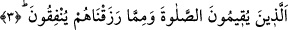

“O’nun âyetleri”; yâni Allah’ın âyetleri, yani emir, nehiy ve diğer konularla ilgili
Kur’an âyetleri “kendilerine okunduğu” tilâvet edildiği “zaman” bu âyetler onların
“imanlarını” yakînlerini ve nefislerinin itmînânını “artırır.” Çünkü Allah’ın varlığı ve
birliği konusunda birbirini destekler mahiyette pek çok delil ve bürhanın ileri
sürülmesi, itmînanın ve yakîn kuvvetinin artmasına sebep olur.
İmam Taftâzânî der ki: “Tasdik, artıp eksilebilen şeylerdendir. Çünkü peygamberler
ve mükâşefe sahibi kimselerin yakîni ile ümmetin yakîni arasında büyük fark vardır. Bu
sebeple müminlerin emiri Hz. Ali (r.a.): “Aradan perde kaldırılacak olsa yakînim
artmaz.” buyurmuştur. Aynı şekilde tasdik edilmesi gereken şeylerden hakkında tek delil
bulunan ile hakkında bir çok delil bulunan arasında kabule şayan oluş bakımından fark
vardır.” Ebüssuûd Efendi de tefsirinde Taftâzânî’nin bu görüşüne katılır.
Kâşifî şöyle der: “Sülemî’nin Hakâik’ında zikrolunmuştur ki: Kur’an tilâvetinin
berekâtıyla onların bâtınlarında yakîn nûru zâhir olur. Tâat ve ibadet fazlalığı onların
zâhirlerinde âşikâr olur. Bahru’l-hakâik’de şöyle buyurulmuştur: Hakîkî îman bir
nurdur ki gayret ve himmet miktarı o, sâhibinin gönül penceresinden parlar. Kur’ân,
erbâb-ı kulûb/gönül ehlinin üzerine okununca onların gönül penceresi kırâat berekâtıyla
ziyâdesiyle açılır ve îmânlarının nuru ziyâdeleşir, alışılandan fazla olur. Böylece onlar
cemâl-i ilâhînin nûrunda müstağrak olurlar.”
“ve sadece Rab”lerine” sahiplerine ve özel olarak işlerini çekip çeviren Allah’a
“tevekkül ederler.” İşlerini yalnızca O’na havale ederler. Sadece O’ndan korkar ve
O’ndan iyilik umarlar.
et-Te’vîlâtü’n-Necmiyye’de şöyle denilmiştir: “Sadece Rab’lerine tevekkül ederler.”
Dünya ve dünya ehline dayanıp güvenmezler. Çünkü iman nuruyla Hakk’ın cemal ve
celâlini müşahede eden kimse Hakk’ı müşâhedenin engin deryasına dalar. Böyle olunca
Hak’tan başkasını görmeye ve onunla meşgul olmaya fırsatı kalmaz. Bütün eşyayı
Cenab-ı Hakk’ın celâl tecellîleri altında yokluğa mahkûm olarak görür. Dolayısıyla
tevekkül ve güveni başka şeye değil sadece Rabb’ine olur.
Kim ki denizde boğulmuştur
Gemiden sandaldan âzâdedir
Boğulan adam denizden başkasını görmez
Başka deryâ vardır, fakat ona zâhir değildir.
3. Onlar namazlarını dosdoğru kılan ve kendilerine rızık olarak verdiklerimizden
(Allah yolunda) harcayan kimselerdir.
Allah Teâlâ önceki âyette ilk olarak haşyet, Allah’ın azamet ve celâlini düşününce